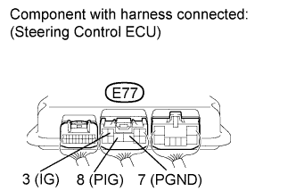

VARIABLE GEAR RATIO STEERING SYSTEM > VGRS System Stops or does not Operate |
| 1.READ VALUE USING INTELLIGENT TESTER (RECORD OF OVERHEAT) |
Use the Data List to check if the record of overheat is functioning properly.
| Tester Display | Measurement Item/Range | Normal Condition | Diagnostic Note |
| Motor Overheat Record | Record of continuous overheat preventive control/Rec or Unrec | Rec or Unrec | - |
| Result | Proceed to |
| "Rec" (Record of motor overheating) | A |
| "Unrec" (No record of motor overheating) | B |
|
| ||||
| A | |
| 2.CHECK HEAT PROTECTION FUNCTION FOR STEERING ACTUATOR |
Turn the engine switch on (IG) and wait for 30 minutes until the steering actuator cools down.
Start the engine and slowly turn the steering wheel from lock to lock (approximately 90°/sec.) 3 times.
Check the number of turns from lock to lock.
| Result | Proceed to |
| 3.2 turns | A |
| 2.7 turns | B |
|
| ||||
| A | |
| 3.CHECK STEERING EFFORT |
Start the engine.
Turn the steering wheel.
Measure the steering effort.
|
| ||||
| OK | |
| 4.CHECK STEERING ACTUATOR |
Check for abnormal noise or vibration in the steering actuator.
|
| ||||
| OK | |
| 5.CHECK STEERING CONTROL ECU (POWER SOURCE CIRCUIT) |
 |
Measure the voltage according to the value(s) in the table below.
| Tester Connection | Switch Condition | Specified Condition |
| E77-3 (IG) - Body ground | Engine switch on (IG) | 11 to 14 V |
| E77-8 (PIG) - Body ground |
Turn the engine switch off.
Measure the resistance according to the value(s) in the table below.
| Tester Connection | Condition | Specified Condition |
| E77-7 (PGND) - Body ground | Always | Below 1 Ω |
| Result Result | Proceed to |
| NG | A |
| OK (for LHD) | B |
| OK (for RHD) | C |
|
| ||||
|
| ||||
| A | ||
| ||